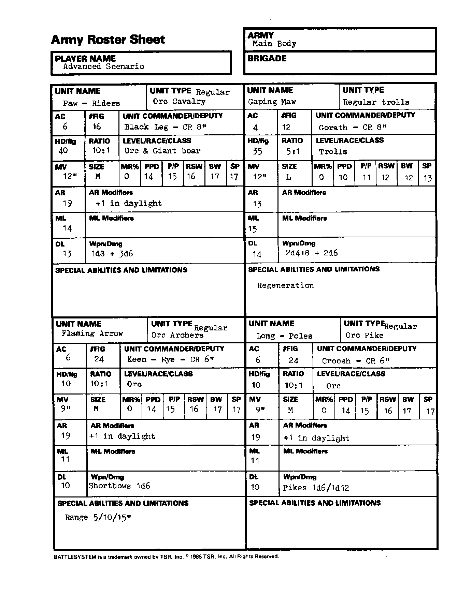

主力军 Main Body：军队部队
能力值顺序：力量／智力／感知／敏捷／体质／魅力。五项豁免依次为麻痹·毒素·死亡魔法／石化·变形／法杖·法棒·魔杖／吐息／法术。移动与指挥半径以桌面英寸计；“—”表示原卡空白或不适用。武器两种伤害分别针对 S/M 与 L 目标；特殊多次攻击另行注明。
兽蹄骑手 Paw-Riders
| 项目 | 数值 |
|---|---|
| 部队类型 | 正规：兽人骑兵 |
| 护甲等级 AC | 6 |
| 模型数 FIG | 16 |
| 指挥官／副官 | Black Leg，CR 8 |
| 每模型生命骰 HD/fig | 40 |
| 生物／模型比例 | 10:1 |
| 等级／种族／职业 | 兽人与巨野猪 |
| 移动率 MV | 12 |
| 体型 | M |
| 魔法抗性 MR | 0% |
| 五项豁免 | 14/15/16/17/17 |
| 攻击等级 AR | 19 |
| AR 修正 | 日光下 AR +1。 |
| 士气等级 ML | 14 |
| ML 修正 | — |
| 纪律等级 DL | 13 |
| 武器／伤害 | 1d8+3d6 |
| 特殊能力与限制 | — |
巨口 Gaping Maw
| 项目 | 数值 |
|---|---|
| 部队类型 | 正规：巨魔 |
| 护甲等级 AC | 4 |
| 模型数 FIG | 12 |
| 指挥官／副官 | Gorath，CR 8 |
| 每模型生命骰 HD/fig | 35 |
| 生物／模型比例 | 5:1 |
| 等级／种族／职业 | 巨魔 |
| 移动率 MV | 12 |
| 体型 | L |
| 魔法抗性 MR | 0% |
| 五项豁免 | 10/11/12/12/13 |
| 攻击等级 AR | 13 |
| AR 修正 | — |
| 士气等级 ML | 15 |
| ML 修正 | — |
| 纪律等级 DL | 14 |
| 武器／伤害 | 2d4+8，加 2d6 |
| 特殊能力与限制 | 再生。 |
烈焰箭 Flaming Arrow
| 项目 | 数值 |
|---|---|
| 部队类型 | 正规：兽人弓手 |
| 护甲等级 AC | 6 |
| 模型数 FIG | 24 |
| 指挥官／副官 | Keen-Eye，CR 6 |
| 每模型生命骰 HD/fig | 10 |
| 生物／模型比例 | 10:1 |
| 等级／种族／职业 | 兽人 |
| 移动率 MV | 9 |
| 体型 | M |
| 魔法抗性 MR | 0% |
| 五项豁免 | 14/15/16/17/17 |
| 攻击等级 AR | 19 |
| AR 修正 | 日光下 AR +1。 |
| 士气等级 ML | 11 |
| ML 修正 | — |
| 纪律等级 DL | 10 |
| 武器／伤害 | 短弓 1d6 |
| 特殊能力与限制 | 射程 5/10/15。 |
长杆 Long-Poles
| 项目 | 数值 |
|---|---|
| 部队类型 | 正规：兽人长枪兵 |
| 护甲等级 AC | 6 |
| 模型数 FIG | 24 |
| 指挥官／副官 | Croosh，CR 6 |
| 每模型生命骰 HD/fig | 10 |
| 生物／模型比例 | 10:1 |
| 等级／种族／职业 | 兽人 |
| 移动率 MV | 9 |
| 体型 | M |
| 魔法抗性 MR | 0% |
| 五项豁免 | 14/15/16/17/17 |
| 攻击等级 AR | 19 |
| AR 修正 | 日光下 AR +1。 |
| 士气等级 ML | 11 |
| ML 修正 | — |
| 纪律等级 DL | 10 |
| 武器／伤害 | 长枪 1d6／1d12 |
| 特殊能力与限制 | — |
兵力卡原图
